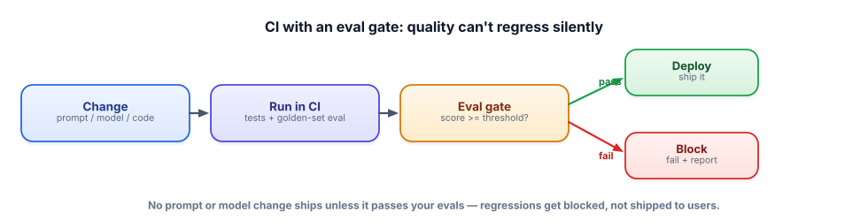

CI for prompts & evals
In normal software, tests in CI stop you shipping bugs. In LLM software, a one-word prompt tweak can quietly wreck quality with no error anywhere. The fix is the same idea, upgraded: make every change pass your evals before it can ship.
A school spelling test checks the same 50 words every week. If a new teaching trick helps you spell 'necessary' but makes you forget 'separate' and 'definitely', the test catches it before report-card day. The eval gate is that weekly test for your prompts: every change has to pass the whole list, not just the word you were fixing. Where it breaks: a spelling test has exact right answers, while many LLM answers are judged by a rubric or another model, and that judge can be wrong or noisy too.
Why LLM apps need an eval gate
CI (continuous integration) is the automation that runs your tests every time you change code, blocking the change if they fail. It works because bugs in normal code usually announce themselves — a test goes red. But LLM behavior is different: you “fix” one prompt to improve one answer and silently break five others, and nothing errors. The output is still fluent, still plausible — just worse.
Traditional tests can’t catch that, because there’s no exception to catch. So you add an eval gate: CI runs your golden-set evaluation (Track 6) on every change and blocks the deploy if the quality score drops below a threshold. Now a regression is caught by a red build, exactly like a bug — instead of by an angry user a week later.

What runs in CI
Two kinds of checks. Deterministic tests — fast, exact assertions on structure, run at temperature 0 where your model still allows it (Claude 4.7+ models accept only default sampling, and API version 2026-10-21 rejects temperature with a 400, Anthropic; there you pin the model ID and assert on shape, not exact wording): does the endpoint return valid JSON with the required fields? does a known question retrieve the known-correct chunk? does the SQL agent produce a runnable query for a fixed question? These behave like normal unit tests. The eval — your golden set of question→expected pairs scored for quality (exact match, or LLM-as-judge for open-ended answers), producing a single number you can gate on. You wire both into a CI workflow that fails if either the tests fail or the eval score falls below your bar.
name: ci
on: [push, pull_request]
jobs:
test:
runs-on: ubuntu-latest
steps:
- uses: actions/checkout@v4
- run: pip install -r requirements.txt
- run: pytest # deterministic tests
- run: python eval.py --min-score 0.85 # the eval gateeval.py runs your golden set and exits with a failure code if the score is below --min-score. That non-zero exit is what turns a quality drop into a failed build — the whole trick in one line.
score = run_golden_set() # fraction correct on your held-out set
print(f"eval score: {score:.2f}")
if score < args.min_score:
print("BELOW THRESHOLD — blocking deploy")
sys.exit(1) # fails the CI jobKeep prompts in version control, not pasted into a dashboard. Then a prompt change is a diff that goes through the same review + eval gate as any code change — reviewable, revertible, and testable. Treating prompts as code is what makes “we changed the prompt and quality dropped” a caught regression instead of a mystery.
Assumptions (ours): 400 golden cases; each answer uses 2,000 input and 300 output tokens on claude-sonnet-5-5 ($2 / $10 per million); an LLM judge on claude-haiku-5-5 (from $0.10 / $0.50) reads 2,500 tokens and writes 100 per case; 30 PRs a day touch prompts or retrieval. Prices: Anthropic models overview.
- Cost per CI run. Generation: 400 x ($0.004 + $0.003) = $2.80. Judge: 400 x ($0.00025 + $0.00005) = $0.12. About $2.92 a run, $88 a day, $2,600 a month. Cheap next to one bad release, but worth knowing. (The Batch API is half price but can take hours, so it suits the nightly full run, not a PR check.)
- How noisy is the score? At 88% pass rate on 400 cases the standard error is sqrt(0.88 x 0.12 / 400) = 0.016, so a 95% interval is about +/- 3.2 points. A gate of "block if the score drops more than 1 point" will fail good PRs at random.
- Gate on paired flips instead. Run baseline and candidate on the same 400 cases and count cases that went pass to fail versus fail to pass. If baseline-vs-baseline reruns flip about 6 cases from sampling alone (measure it), block when the candidate has more than, say, 12 pass-to-fail flips or more pass-to-fail than fail-to-pass flips. Tag each case with intent so a flip cluster in "refunds" is visible.
- Determinism is not always available. Claude 4.7 and later accept only default sampling, and API version 2026-10-21 rejects
temperaturewith a 400 (Anthropic migration guide). So pin dated model IDs, assert on structure, and estimate noise by reruns rather than relying on temperature 0. - Tie results to versions. The gate's report records prompt name and version, model ID and index version for both arms; that is the same
gen_ai.prompt.versionyou stamp on production traces. - Split the suite. 100-case smoke set on every PR (about $0.73), full 400 plus adversarial cases nightly and before release.
- LLM regressions are silent — no error, just worse output — so ordinary tests miss them.
- Add an eval gate: CI runs your golden set and blocks the change if the score drops below a threshold.
- Run deterministic tests (temp 0 where allowed, else pinned model + structural asserts: valid JSON, right retrieval) and the quality eval.
- The mechanism is a non-zero exit code on a failing eval — that’s what fails the build.
- Prompts live in version control, so every prompt change is reviewed and eval-gated like code.
Your teammate wants to change the system prompt to fix one customer complaint, and deploy it straight to production. As the person who set up CI, what do you insist happens first — and what specifically stops a hidden regression?
▸ Show solution & reasoning
What I insist on: the prompt change goes in as a commit/PR, which triggers CI. CI runs the deterministic tests and the golden-set eval; the change only merges/deploys if the eval score stays at or above the threshold. I’d also add the specific complaint as a new case in the golden set, so we can prove the fix works and never regress on it again.
What stops the hidden regression: the golden set contains many cases, not just the one being fixed. If “fixing” the complaint quietly degrades ten other answers, their scores drop, the aggregate falls below the threshold, and the build fails — blocking the deploy. Without the gate, the change would ship looking fine (no errors) and the ten regressions would surface later as user complaints. The gate converts “we’ll find out in production” into “we find out in the pull request,” which is the entire value of CI applied to LLM quality.
Why can’t ordinary unit tests alone protect an LLM app from quality regressions the way they protect normal code?
Why run evals in CI on every change?
Your golden set has 300 cases and the pass rate is 85%. A PR drops it to 83.7% (4 fewer passes). What should the gate do?
Why should the eval report record the prompt version, model ID and retrieval index version for both baseline and candidate?
The most valuable thing that comes out of running an eval gate over time isn’t any single score — it’s the golden set itself, which should grow with every incident. When something goes wrong in production (a class of question the system botches, a prompt injection that slips through, a hallucination a user reports), the fix isn’t just to patch it; it’s to add that exact case to the golden set.
Now the eval gate guarantees you can never regress on it again — the system literally cannot ship a change that reintroduces that failure. Over months, this turns your evaluation suite into an encoded memory of every mistake you’ve made and fixed, which is a genuine competitive moat (Track 11): a competitor can copy your prompts, but not your hard-won library of failure cases.
This also changes how you adopt new models. When a better model launches, teams without an eval gate upgrade nervously and hope; teams with one just run the new model against the golden set and see whether it’s actually better on their real cases — often within an hour, safely. The eval gate is what lets you move fast without breaking things: it’s simultaneously your regression shield, your model-selection tool, and your institutional memory. When an interviewer asks how you’d keep an LLM product reliable as it evolves, “evals in CI, and every production failure becomes a permanent test case” is the answer that signals real operational maturity.
labs/06_evals.pyFree and offline once set up: Ollama with qwen2.5:7b, plus the packages in labs/README.md. From the course folder:
python labs/06_evals.pyWhat to look for: The lab's regression gate compares two prompt versions per case and prints which cases flipped. Change one instruction in the candidate prompt and rerun: the per-case flip list, not the average, tells you what broke. Also run the baseline against itself twice to see how many flips come from sampling noise alone; that number is your gate's floor. The position-bias test shows why an LLM judge needs its own checks.
Small samples: these labs use 5 to 20 cases so they run in minutes on a laptop. Where they report a rate, they print n and a 95% Wilson interval. Read them as a demonstration of the mechanism, not as a measured rate for your system; for that you need hundreds of cases and several seeds.
▸ Recorded output (our run, 2026-11-03, qwen2.5:7b on a laptop GPU)
5) Judge position bias: same pair, swapped order
How long do card refunds take? order1 picked B, order2 picked B -> FLIPPED
Return window for electronics? order1 picked B, order2 picked A -> consistent
Express shipping price? order1 picked B, order2 picked A -> consistent
When is standard shipping free? order1 picked A, order2 picked B -> consistent
Duplicate charge reversal time? order1 picked A, order2 picked B -> consistent
consistent verdicts: 4/5 = 80% (95% CI 38%-96%) correct in both orders: 2/5 = 40% (95% CI 12%-77%)
n=5 pairs is a demo, not a measurement of this judge's bias: the intervals span most of 0-100%.
Look: with no reference passage in the judge prompt, the judge has to guess which number is right.
Always judge both orders and count a win only when both agree; give the judge the reference.
6) How wide is the error bar on 12 cases?
v1 accuracy 11/12 = 92% (95% CI 65%-99%) (Wilson interval)
At n=400 the same accuracy would be roughly +/- 2.7%
{"v1_correct": 0.917, "regressions": 12, "judge_consistent": 4}Your numbers will differ a little run to run. Full log: labs/outputs. Source: labs/06_evals.py.
Warm-up. Compute the 95% confidence half-width for a 90% pass rate on a 200-case golden set, and say what that means for a gate threshold.
▸ Solution
SE = sqrt(0.9 x 0.1 / 200) = sqrt(0.00045) = 0.0212. Half-width = 1.96 x 0.0212 = 0.042, about +/- 4.2 points. A gate that blocks on a 2-point average drop would trigger on noise often. Either grow the set, gate on paired flips, or only block on larger drops while still reviewing the flip list.
Transfer. Write the GitHub Actions trigger and job condition so the expensive eval job runs only when prompts, retrieval code or the golden set change, while unit tests run on every push.
▸ Solution
Use two jobs. The unit-test job runs on: [push, pull_request] with no path filter. The eval job lives in a workflow with on: pull_request: paths: ['prompts/**', 'app/retrieval/**', 'evals/golden/**', 'evals/*.py']. Its steps: checkout, install, run python eval.py --baseline main --candidate HEAD --max-pass-to-fail 12, and upload the per-case report as an artifact. Make that job a required status check on the main branch so a red eval blocks the merge. Path filters keep cost down without letting a prompt change skip the gate.
Stretch. Your LLM judge is a smaller model than the system it grades. Describe how you would validate the judge before trusting it as a gate.
▸ Solution
Build a calibration set of a few hundred answers with human labels (pass/fail with the rubric). Measure the judge's agreement with humans (accuracy and Cohen's kappa), its false-pass rate on known-bad answers, and position bias by swapping A/B order in pairwise judgments and counting flips (the lab does this). Check length bias by comparing verdicts on padded versus concise correct answers. Only gate on rubric items where agreement is high; route low-agreement items to sampled human review. Recheck the judge whenever you change its prompt or model, because the judge is a component that can regress too.
Junior What is an eval gate in CI for an LLM application?
▸ Model answer
It is a CI step that runs the application against a fixed golden set of inputs with expected outputs or rubrics, scores the results, and fails the build if quality drops below an agreed bar. It exists because LLM regressions are silent: a prompt change can make answers worse without any error. The gate runs on every pull request that touches prompts, retrieval or model settings, so a regression shows up as a red build before it reaches users. Every production failure we fix is added to the golden set so it cannot come back.
Mid How do you deal with non-determinism when gating on LLM evals?
▸ Model answer
First I measure it: rerun the baseline against itself and count how many cases flip. That gives a noise floor. Then I gate on paired comparisons, the same cases for baseline and candidate, counting pass-to-fail versus fail-to-pass flips, instead of comparing two noisy averages. I pin model IDs, assert on structure for deterministic checks, and where the provider allows it I lower sampling variance; on newer Claude models sampling parameters are fixed, so reruns are the tool. For close calls I run each case several times and use majority pass.
Senior A team says their golden set always passes but users keep finding regressions. What is wrong with their eval program and how do you fix it?
▸ Model answer
The set has gone stale or was too easy. Likely causes: it was written once by engineers, it does not reflect current traffic, it is saturated (everything passes, so it has no power), and the judge is lenient. Fixes: sample real production traffic every week by intent and add hard cases, especially every incident and thumbs-down; keep a held-out slice the team cannot tune against; add adversarial and long-tail cases; validate the judge against human labels; and report per-intent scores. A healthy gate fails sometimes; if it never fails, it is not measuring anything.
Even with a great eval gate, production will surprise you — real users do things your golden set didn’t imagine. So you watch. Next: monitoring in production.